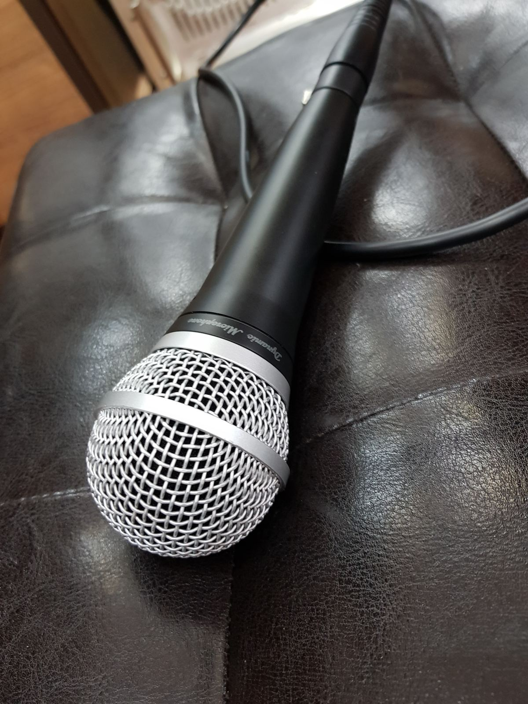

Интервью с Алексеем Козловым
У меня на шоу есть традиция — приглашать на интервью известных музыкантов, продюсеров, звукорежиссёров, дизайнеров и других людей, имеющих отношение к виниловой культуре и музыке на виниловых пластинках. Это интересный формат: обычно интервью берут в студии, а тут человек поднимается на сцену лучшего джаз-клуба мира и в рамках винилового шоу, среди проигрывателей и пластинок, отвечает на мои вопросы, рассказывает о себе, о музыке и, конечно же, о пластинках.
Гостями шоу были самые разные люди. Николай Арутюнов («Лига Блюза», Funky Soul), которому я задал вопрос, как ему пелось вместе с Би Би Кингом. Артём Кукаев, артист Российского национального оркестра — одного из 20 лучших оркестров мира — и владелец собственной мастерской музыкальных инструментов. Илья Мазаев, рассказавший о своей работе на студиях легендарных звукорежиссёров Police, Genesis, Pet Shop Boys и Tears For Fears. Анна Королёва, вокалистка, саксофонистка, создательница вокальной школы MultiVoice и бэнд-лидер ярчайших джазовых проектов. Tony Remi — музыкант Annie Lennox, Tower Of Power, The Crusaders и Shakatak. Иннес Сайбин, гитарист Роберта Планта периода Fate Of Nations, и многие другие.
А сейчас я взял интервью у Алексея Козлова. Мэтр крайне редко даёт интервью, и это уникальная возможность узнать о том, как записывались пластинки «Арсенала», из первых уст — от его лидера, легендарного российского джазмена, президента лучшего джаз-клуба мира.
1 марта, 18:00, Клуб Алексея Козлова, зал The Beat. ЗВУК НА ВИНИЛЕ с Павлом Катковым.
